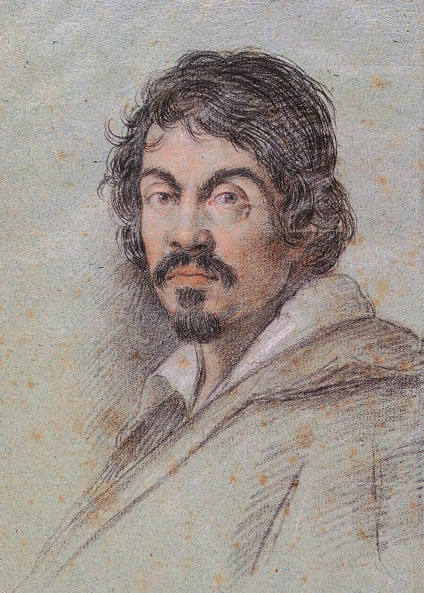
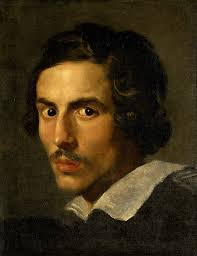

O que foi o período barroco?
O período barroco foi um movimento cultural e artístico que se desenvolveu entre os séculos XVII e XVIII, abrangendo diversas áreas como arte, literatura, música, arquitetura e filosofia. Surgiu inicialmente na Itália e se espalhou por toda a Europa e, posteriormente, pelas colônias, incluindo a América Latina.
Características Principais:
- Exuberância e Ornamentação: O barroco é conhecido por seu estilo decorativo, com ênfase em detalhes ricos e complexos, tanto na arte quanto na arquitetura.
- Dramaticidade e Emoção: O movimento buscava provocar reações emocionais intensas, utilizando contrastes de luz e sombra, expressões faciais marcantes e narrativas dramáticas.
- Religiosidade: Muitas obras barrocas refletem a espiritualidade da época, especialmente em resposta à Reforma Protestante e à Contra-Reforma, abordando temas religiosos com uma nova intensidade.
- Complexidade Linguística: Na literatura, autores barrocos usavam uma linguagem rica em metáforas, hipérboles e jogos de palavras, refletindo a busca por profundidade e complexidade.
Contexto Histórico:
O barroco surgiu em um período de grandes mudanças sociais, políticas e religiosas, marcado por guerras, crises econômicas e transformações culturais. Essa turbulência influenciou a produção artística, que buscava refletir as incertezas e as contradições da época.
O barroco se estendeu por várias regiões, resultando em variações locais, como o barroco brasileiro, que incorporou elementos da cultura indígena e africana. O movimento deixou um legado duradouro, influenciando o desenvolvimento da arte e da literatura nos séculos seguintes.
Objetivo
O objetivo do barroco era provocar emoções intensas e refletir a complexidade da experiência humana, em um contexto de profundas mudanças sociais e religiosas. Alguns dos principais objetivos incluem:
Expressão Emocional: O barroco buscava evocar sentimentos profundos, como amor, dor, alegria e desespero, utilizando técnicas dramáticas e narrativas impactantes.
Dramaticidade: A arte barroca frequentemente apresentava cenas dramáticas e contrastes marcantes, utilizando o chiaroscuro para enfatizar essas emoções.
Reflexão Espiritual: Muitas obras barrocas abordavam temas religiosos, buscando aprofundar a espiritualidade e a relação do ser humano com Deus.
Sofisticação e Ornamentação: O estilo barroco era caracterizado por uma rica ornamentação, com detalhes elaborados e um forte apelo visual.
Contrastes: O uso de opostos, como luz e sombra, ordem e caos, refletia as tensões da época, como as crises políticas e religiosas.
Inovação e Experimentação: O barroco incentivava a exploração de novas formas e técnicas, tanto na literatura quanto nas artes plásticas e na arquitetura.
Barroco: Exuberância
A exuberância barroca é uma característica do período barroco (séculos XVII e XVIII), marcada pela riqueza, complexidade e ornamentação na arte, literatura, música e arquitetura. Na pintura, destaca-se pelo uso dramático de luz e sombra e cores vibrantes, com artistas como Caravaggio e Rembrandt.
Na literatura, manifesta-se em um estilo repleto de metáforas e jogos de palavras, exemplificado por poetas como Gregório de Matos.
De modo geral, busca provocar emoções intensas, celebrando a vida e a espiritualidade, contrastando com os ideais mais racionais do Renascimento.
Barroco: Movimentos
O movimento barroco é uma das características centrais desse estilo, refletindo dinamismo e ação. Essa ideia de movimento se manifesta de várias maneiras:
Composições Dinâmicas: Nas artes visuais, como na pintura e escultura, as obras frequentemente apresentam figuras em posições contorcidas, criando uma sensação de movimento e fluidez.
Narrativa e Drama: Na literatura, as obras barrocas costumam contar histórias intensas e emocionais, com um ritmo narrativo que mantém o leitor engajado.
Música: No campo musical, o barroco se caracteriza por composições elaboradas, com mudanças rápidas de intensidade e ritmo, o que transmite uma sensação de movimento constante.
Arquitetura: Edifícios barrocos apresentam fachadas e interiores elaborados, com elementos curvilíneos e ornamentação que criam uma sensação de profundidade e movimento.
Esses aspectos contribuem para a dramaticidade e a emoção que definem o barroco, tornando-o um estilo vibrante e expressivo.
Barroco: Contrastes Dramáticos
Os contrastes dramáticos são uma característica fundamental do barroco, manifestando-se em várias áreas da arte e da cultura desse período. Aqui estão algumas das formas como esses contrastes se expressam:
Luz e Sombra: Na pintura, o uso do claro-escuro (tenebrismo) cria um efeito dramático, acentuando a iluminação de certas partes da obra enquanto outras permanecem na sombra. Artistas como Caravaggio são famosos por essa técnica.
Emoções Intensas: As obras barrocas frequentemente exploram emoções extremas, como alegria, desespero, amor e dor, criando um forte impacto emocional.
Temas Opostos: Na literatura, há uma exploração de temas contrastantes, como vida e morte, fé e dúvida, que refletem a complexidade da condição humana.
Arquitetura: Na arquitetura barroca, as fachadas e interiores muitas vezes apresentam contrastes entre a simplicidade de formas e a complexidade decorativa, criando uma sensação de tensão visual.
Esses contrastes não apenas intensificam a experiência estética, mas também refletem as incertezas e as dualidades da época barroca.
Caravaggio
Caravaggio, cujo nome verdadeiro era Michelangelo Merisi, foi um pintor italiano ativo no final do século XVI e início do século XVII. Nascido em 1571, ele é conhecido por sua técnica inovadora de chiaroscuro, que cria um forte contraste entre luz e sombra, conferindo dramaticidade às suas obras.
Caravaggio revolucionou a pintura barroca ao retratar temas religiosos com uma abordagem mais humana e realista, utilizando modelos comuns e cenas cotidianas. Suas obras, como "A Vocação de São Mateus" e "Judite e Holofernes", refletem emoções intensas e uma nova maneira de ver a espiritualidade.
Além de sua genialidade artística, Caravaggio teve uma vida tumultuada, marcada por conflitos e problemas legais, que culminaram em sua morte misteriosa em 1610. Seu estilo influenciou muitos artistas posteriores e deixou um legado duradouro na história da arte.
Bernini
Gian Lorenzo Bernini foi um importante escultor, arquiteto e pintor italiano do período barroco, ativo principalmente no século XVII. Nascido em 1598, em Nápoles, e falecido em 1680, em Roma, Bernini é frequentemente considerado o maior artista do barroco romano.
Ele é conhecido por suas esculturas dramáticas e expressivas, como "O Êxtase de Santa Teresa" e "Davi", que capturam movimento e emoção de maneira única. Além de suas esculturas, Bernini também se destacou na arquitetura, projetando a famosa Praça de São Pedro, incluindo a colunata que a envolve, e o baldaquino de São Pedro, uma imponente estrutura de altar na Basílica de São Pedro.
Sua obra refletiu a grandiosidade do barroco e teve um impacto significativo na arte e na arquitetura da época, consolidando a imagem de Roma como um centro artístico e religioso. Bernini foi um verdadeiro gênio, que uniu escultura e arquitetura de maneira harmoniosa e inovadora.
Principais Obras: